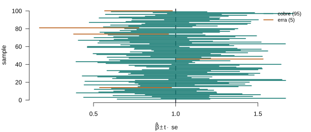
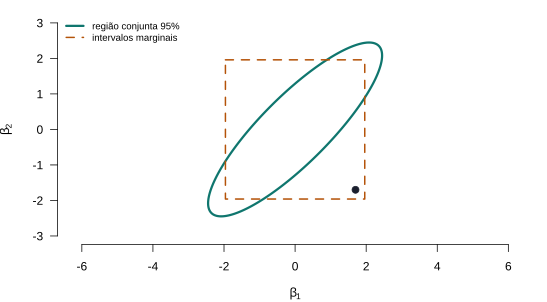

Lecture 6
PIMES/UFPE
Lectures 4 and 5 gave us \(\bb\) and its distribution — exact under normality, asymptotically normal without it. A distribution, however, is not yet an answer. Inference turns it into statements about \(\bbeta\): is a hypothesis compatible with the data? which values are plausible? how sure can we be?
Three questions, one apparatus:
Under normality the whole apparatus is exact, for every \(n\). Lecture 4 established the first piece — \(\bb\) is normal; here are the two that testing needs.
Theorem 1 (Exact sampling distributions under normality) Under A1–A4 and A6 (\(\beps \mid \bX \sim \Normal(\bzero, \sigma^2\bI_n)\)), conditional on \(\bX\):
The three in one breath: (1) a linear map of a normal is normal; (2) \((n-K)s^2 = \beps'\bM\beps\) is a quadratic form in that normal, and \(\bM\) idempotent of rank \(n-K\) makes it \(\chi^2_{n-K}\); \(\bX'\bM = \bzero\) gives the independence in (2); (3) is the normal of (1) over the root of the independent \(\chi^2\) of (2) — the unknown \(\sigma\) cancels, leaving \(s\).
If \(\sigma\) were known, \((b_k-\beta_k)/(\sigma\sqrt{S^{kk}})\) would be exactly standard normal. Replacing \(\sigma\) by the estimate \(s\) injects extra uncertainty, and the price is precisely the heavier tails of the \(t_{n-K}\) — one degree of freedom lost per estimated coefficient. As \(n\) grows, \(t_{n-K} \to \Normal(0,1)\): the exact \(t\) here and the asymptotic normal of Lecture 5 are the two ends of the same object.
A point estimate hides its own uncertainty. We turn the distribution of \(b_k\) into a range of plausible values for \(\beta_k\). Two extremes are useless: “\(\beta_k \in b_k \pm \infty\)” is certain but empty; “\(\beta_k = b_k\) exactly” is precise but never true. We pick a confidence \(100(1-\alpha)\%\) in between.
Definition 1 (Confidence interval) Since \((b_k - \beta_k)/\operatorname{se}(b_k) \sim t_{n-K}\) (Theorem 1), this ratio lies within \(\pm t_{1-\alpha/2,\,n-K}\) with probability \(1-\alpha\); rearranging bounds \(\beta_k\). The \(100(1-\alpha)\%\) confidence interval for \(\beta_k\) is \[b_k \pm t_{1-\alpha/2,\,n-K}\,\operatorname{se}(b_k).\]
Important
The interval is random; \(\beta_k\) is fixed. “\(95\%\) confidence” is a statement about the procedure — over repeated samples, \(95\%\) of the intervals it produces contain the truth — not a probability that this one interval contains \(\beta_k\). That probability is \(0\) or \(1\); we simply do not know which.

Figure 1: One hundred samples, one hundred nominal-95% confidence intervals for the same slope \(\beta=1\) (dashed). About 95 cover the truth (teal); the few that miss (amber) are the 5% we agreed to tolerate. Coverage is this repeated-sampling fact — a property of the procedure, not of any single interval.
The same machinery covers any linear combination \(c = \mathbf{w}'\bb\) — a sum of returns, a predicted mean, a contrast. Under A6 it is normal with mean \(\mathbf{w}'\bbeta\) and variance \(\mathbf{w}'\Var[\bb\mid\bX]\,\mathbf{w}\), so \[\mathbf{w}'\bb \;\pm\; t_{1-\alpha/2,\,n-K}\,\sqrt{\mathbf{w}'\,\widehat{\Var}[\bb\mid\bX]\,\mathbf{w}}.\]
Consider a model of investment, \[\ln I_t = \beta_1 + \beta_2\,i_t + \beta_3\,\Delta p_t + \beta_4\,\ln Y_t + \beta_5\,t + \varepsilon_t,\] with \(i_t\) the nominal interest rate and \(\Delta p_t\) inflation. A rival theory says investors respond only to the real rate \(i_t - \Delta p_t\) — which is this same model under the restriction \(\beta_2 = -\beta_3\), i.e. \(\beta_2 + \beta_3 = 0\).
A hypothesis test turns the restriction into a decision. We split the possibilities into two exclusive hypotheses — a null \(H_0\) (the restriction holds) and an alternative \(H_1\) (it does not) — and fix a rejection region: values of a test statistic so unlikely under \(H_0\) that observing them counts as evidence against it.
Rejecting at \(5\%\) claims one thing: if the restriction held, data as extreme as those observed would occur in at most \(5\%\) of samples. It does not say \(H_0\) has a \(5\%\) chance of being true, nor that the effect is large, nor that it is economically relevant. Significance measures incompatibility with chance, not importance. A tiny effect is “significant” with large \(n\); a huge effect is “insignificant” with small \(n\).
Every linear hypothesis — one coefficient, a difference, a sum — fits one template.
Definition 2 (Linear restriction) A set of \(J\) linear hypotheses is \(\mathbf{R}\bbeta = \mathbf{q}\), with \(\mathbf{R}\) a \(J \times K\) matrix of rank \(J\) (rows linearly independent, \(J < K\)) and \(\mathbf{q}\) a \(J\)-vector.
Take a three-coefficient model, \(\bbeta = [\,\beta_1,\ \beta_2,\ \beta_3\,]'\). Each hypothesis is one row of \(\mathbf{R}\) (picking out the right combination) set equal to an entry of \(\mathbf{q}\):
| Hypothesis | \(\mathbf{R}\) | \(\mathbf{q}\) |
|---|---|---|
| \(\beta_2 = 0\) | \([\,0\ \ 1\ \ 0\,]\) | \(0\) |
| \(\beta_1 = \beta_2\) | \([\,1\ {-1}\ \ 0\,]\) | \(0\) |
| \(\beta_2 + \beta_3 = 0\) | \([\,0\ \ 1\ \ 1\,]\) | \(0\) |
In the model \(y = \beta_0 + \beta_1 x_1 + \beta_2 x_2 + \beta_3 x_3 + \beta_4 x_4 + \beta_5 x_5 + \varepsilon\), write \(\mathbf{R}\) and \(\mathbf{q}\) for each hypothesis:
Impose the restriction while fitting: minimize the sum of squares among the \(\bbeta\) that obey \(\mathbf{R}\bbeta = \mathbf{q}\).
Theorem 2 (Restricted least squares) The minimizer of \((\bY - \bX\bbeta)'(\bY - \bX\bbeta)\) subject to \(\mathbf{R}\bbeta = \mathbf{q}\) is \[\bb_R = \bb - (\bX'\bX)^{-1}\mathbf{R}'\big[\mathbf{R}(\bX'\bX)^{-1}\mathbf{R}'\big]^{-1}\mathbf{m}, \qquad \mathbf{m} \equiv \mathbf{R}\bb - \mathbf{q},\] where \(\bb\) is the unrestricted estimator and \(\mathbf{m}\) is the discrepancy vector — how far the unrestricted fit is from obeying the hypothesis.
Lagrangian \(S(\bbeta) + 2\boldsymbol{\lambda}'(\mathbf{R}\bbeta - \mathbf{q})\); the first-order conditions give \(\bb_R\) as \(\bb\) pulled back by exactly the amount needed to satisfy the constraint — a correction proportional to the discrepancy \(\mathbf{m}\).
A true restriction is information: it cuts the free parameters from \(K\) to \(K-J\), and estimating fewer things from the same data is more precise.
The clean inequality needs A4. Writing \(\bb_R - \bbeta = \mathbf{C}(\bb - \bbeta)\) with the idempotent \(\mathbf{C} = \bI - (\bX'\bX)^{-1}\mathbf{R}'[\mathbf{R}(\bX'\bX)^{-1}\mathbf{R}']^{-1}\mathbf{R}\), we get \(\Var[\bb_R\mid\bX] = \mathbf{C}\,\Var[\bb\mid\bX]\,\mathbf{C}'\). This is \(\preceq \Var[\bb\mid\bX]\) only when \(\mathbf{C}\) is an orthogonal projection in the metric of \(\Var[\bb]\) — which A4 supplies (\(\Var[\bb]=\sigma^2(\bX'\bX)^{-1}\)). Under heteroskedasticity, restricted OLS can be less precise in some directions; the estimator that always recovers the gain is restricted GLS (the efficient one, Lecture 7). The information intuition survives; only the plain-OLS identity needs A4.
Now that \(\mathbf{R}\), \(\bb_R\) and the discrepancy \(\mathbf{m}\) are in hand, name the routes. A test compares the restricted and unrestricted fits; three ways to measure the gap, all agreeing exactly under normality (and asymptotically in general):
Take the discrepancy \(\mathbf{m} = \mathbf{R}\bb - \mathbf{q}\) (from the restricted-LS slide) and ask how far it is from \(\bzero\), standardized by its own variance. That standardized distance is the Wald statistic — here in its exact, linear, classical-variance form; Part III lifts all three qualifiers.
Theorem 3 (The Wald statistic (exact form)) Under \(H_0\) and A6, \(\mathbf{m}\) is normal with \(\E[\mathbf{m}\mid\bX]=\bzero\) and \(\Var[\mathbf{m}\mid\bX]=\mathbf{R}\,\sigma^2(\bX'\bX)^{-1}\mathbf{R}'\), so \[\underbrace{\frac{\mathbf{m}'[\mathbf{R}(\bX'\bX)^{-1}\mathbf{R}']^{-1}\mathbf{m}}{\sigma^2}}_{W\ \sim\ \chi^2_J}, \qquad \underbrace{\frac{\mathbf{m}'[\mathbf{R}(\bX'\bX)^{-1}\mathbf{R}']^{-1}\mathbf{m}}{J\,s^2}}_{F\ \sim\ F_{J,\,n-K}}.\] The first (\(\sigma^2\) known) is the Wald statistic; the second is its feasible \(F\) form (\(\sigma^2\to s^2\), \(\div J\)).
It is a \(\chi^2_J\) because standardizing the \(J\)-vector \(\mathbf{m}\) gives \(J\) independent standard normals, squared and summed. Replacing the unknown \(\sigma^2\) by \(s^2\) — an independent \(\chi^2_{n-K}/(n-K)\) from Theorem 1 — and dividing by \(J\) turns the \(\chi^2_J\) into an \(F_{J,\,n-K}\).
The most common test is a single restriction: \(\mathbf{R} = \mathbf{e}_k'\) (a row picking out \(\beta_k\)), \(\mathbf{q} = c\). Then \(\mathbf{m} = b_k - c\) and \(\mathbf{R}(\bX'\bX)^{-1}\mathbf{R}' = S^{kk}\), so the \(F\) is the square of a \(t\)-ratio.
Definition 3 (The t-test) For \(H_0\!: \beta_k = c\), \[t = \frac{b_k - c}{\operatorname{se}(b_k)} \sim t_{n-K}, \qquad \operatorname{se}(b_k) = s\sqrt{S^{kk}}, \qquad F = t^2 .\] Reject when \(|t| > t_{1-\alpha/2,\,n-K}\), with \(S^{kk} = [(\bX'\bX)^{-1}]_{kk}\) as above.
The familiar \(t\)-test is not a separate tool — it is the \(F\) (equivalently the Wald) for one restriction.
The distance view standardized \(\mathbf{m}\). The fit view asks the equivalent question through the residuals — and the two are literally the same number.
Because \(\bb\) is the global minimizer of the residual sum of squares \(\text{SSR}=\sum_i e_i^2\), imposing any restriction can only raise it: \[\text{SSR}_R \;\ge\; \text{SSR}_U .\]
The rise equals the standardized distance. With \(\be_* = \bY - \bX\bb_R = \be - \bX(\bb_R-\bb)\) and \(\bX'\be = \bzero\), \[\text{SSR}_R - \text{SSR}_U = (\bb_R-\bb)'\bX'\bX(\bb_R-\bb) = \mathbf{m}'[\mathbf{R}(\bX'\bX)^{-1}\mathbf{R}']^{-1}\mathbf{m},\] so the \(F\) has the equivalent fit form \[F = \frac{(\text{SSR}_R - \text{SSR}_U)/J}{\text{SSR}_U/(n-K)} = \frac{(R^2 - R^2_R)/J}{(1-R^2)/(n-K)}.\]
Example 1 (Overall significance) Testing that all slopes are zero (\(H_0\!: \beta_2 = \cdots = \beta_K = 0\)) gives the “overall \(F\)” reported by every regression package, \[F = \frac{R^2/(K-1)}{(1-R^2)/(n-K)} \;\sim\; F_{K-1,\,n-K}.\] A model can have every coefficient individually insignificant yet a highly significant overall \(F\) — the hallmark of collinear regressors that are jointly, but not separately, informative.
The distance-view \(W\) of Part II was one special case. Keep the same statistic — a distance, weighted by its own variance — and lift three qualifiers at once:
| Axis | Part II (exact) | Wald, in general |
|---|---|---|
| Variance \(\widehat{\bV}\) | classical \(s^2(\bX'\bX)^{-1}\) (A4) | any consistent — incl. robust sandwich |
| Sample | exact \(F\)/\(\chi^2\) under A6 | asymptotic \(\chi^2_J\) without A6 |
| Restriction | linear \(\mathbf{R}\bb-\mathbf{q}\) | nonlinear \(h(\bb)\) via the Delta Method |
Theorem 4 (Wald statistic) For \(H_0\!: \mathbf{R}\bbeta = \mathbf{q}\), with \(\widehat{\bV}\) a consistent estimate of \(\Var[\bb]\), \[W = (\mathbf{R}\bb - \mathbf{q})'\big[\mathbf{R}\,\widehat{\bV}\,\mathbf{R}'\big]^{-1}(\mathbf{R}\bb - \mathbf{q}) \;\dto\; \chi^2_J .\] With the classical \(\widehat{\bV} = s^2(\bX'\bX)^{-1}\) and A6 this is the Part II statistic, and \(W/J \sim F_{J,\,n-K}\) exactly.
Every Wald test has the shape \((\text{restriction})' \,[\,\text{its variance}\,]^{-1}\, (\text{restriction})\). Change the estimator — GLS, IV, GMM (Lecture 12), maximum likelihood (Lecture 13) — and only \(\bb\) and \(\widehat{\bV}\) change; the test does not. Learning it once here is learning it for the whole course.
Drop A6. The exact \(t\), \(F\) and \(\chi^2\) no longer hold — but the same statistics have limiting distributions.
The restricted fit carries a Lagrange multiplier \(\boldsymbol{\lambda}_*\) on the constraint — the “pressure” the data put on it. Testing whether that pressure is zero is testing \(H_0\).
Theorem 5 (LM (score) test) \[\boldsymbol{\lambda}_* = [\mathbf{R}(\bX'\bX)^{-1}\mathbf{R}']^{-1}(\mathbf{R}\bb - \mathbf{q}), \qquad W_{LM} = (\mathbf{R}\bb - \mathbf{q})'[\mathbf{R}\,s^2(\bX'\bX)^{-1}\mathbf{R}']^{-1}(\mathbf{R}\bb - \mathbf{q}).\] Since \(\boldsymbol{\lambda}_* = \bzero \iff \mathbf{R}\bbeta - \mathbf{q} = \bzero\), the LM test needs only the restricted model — and, in the linear case, no likelihood.
Some hypotheses are not linear in \(\bbeta\): a ratio of coefficients equal to one, a long-run multiplier, an elasticity at a point. Write them \(h(\bbeta) = \mathbf{0}\). To test them we need the distribution of \(h(\bb)\) — and \(h\) of an estimator is not, in general, normal.
Theorem 6 (Delta Method) If \(\sqrt{n}(\btheta_n - \btheta) \dto \Normal(\bzero, \bV)\) and \(h\) is continuously differentiable with Jacobian \(\bGamma = \partial h(\btheta)/\partial\btheta'\), then \[\sqrt{n}\big(h(\btheta_n) - h(\btheta)\big) \dto \Normal\!\big(\bzero,\ \bGamma\bV\bGamma'\big).\]
First-order Taylor: \(h(\btheta_n) = h(\btheta) + \bGamma(\btheta_n - \btheta) + \text{h.o.t.}\); the higher-order terms vanish in probability after rescaling by \(\sqrt{n}\), and the linear term carries the normal through. The Jacobian \(\bGamma\) is the “exchange rate” between the uncertainty in \(\btheta\) and that in \(h(\btheta)\).
Apply the Delta Method to the restriction itself. With \(\widehat{\bGamma} = \partial h(\bbeta)/\partial\bbeta'\) evaluated at \(\bb\), \[W = h(\bb)'\big[\widehat{\bGamma}\,\widehat{\bV}\,\widehat{\bGamma}'\big]^{-1} h(\bb) \;\dto\; \chi^2_J.\]
Example 2 (A ratio of coefficients) To test \(H_0\!: \beta_1/\beta_2 = 1\), write \(h(\bbeta) = \beta_1 - \beta_2\) (linear here) or, if the ratio itself is the object of interest, \(h(\bbeta) = \beta_1/\beta_2 - 1\) with \(\widehat{\bGamma} = \big[\,1/b_2,\ -b_1/b_2^2\,\big]\). The Delta Method supplies the standard error of the ratio; the Wald statistic does the rest.
Testing \(\beta_1\) and \(\beta_2\) separately is not testing them jointly. Because \(b_1\) and \(b_2\) are correlated, the joint \(95\%\) region is an ellipse, not the rectangle formed by the two marginal intervals.

Figure 2: A 95% joint confidence region (ellipse) for correlated \((\beta_1,\beta_2)\), and the box of the two marginal 95% intervals. The dot is inside both marginal intervals yet outside the joint region: two separate tests are not one joint test.
Inference is usually about \(\bbeta\); sometimes it is about a new \(y\). Both use the same variance machinery, with one extra term.
Did the 1973 oil shock change the structure of the U.S. gasoline market? Split the sample at 1973 and let each period have its own coefficients — the unrestricted model is block-diagonal, \(\mathbf{y} = \operatorname{diag}(\bX_1, \bX_2)(\bbeta_1', \bbeta_2')' + \beps\), which is just OLS on each subsample. “No structural break” is the restriction \(\bbeta_1 = \bbeta_2\), i.e. \(\mathbf{R} = [\bI : -\bI]\), \(\mathbf{q} = \bzero\) — and imposing it is OLS on the pooled data.
Example 3 (The Chow test) Under \(H_0\!:\bbeta_1 = \bbeta_2\), with \(\be_1, \be_2\) the separate residuals and \(\be_*\) the pooled, \[F = \frac{\big(\be_*'\be_* - (\be_1'\be_1 + \be_2'\be_2)\big)/K}{(\be_1'\be_1 + \be_2'\be_2)/(n_1 + n_2 - 2K)} \sim F_{K,\,n_1+n_2-2K}.\] An ordinary \(F\): the pooled fit is the restricted model, the two separate fits the unrestricted one.
| Exact (finite sample) | Large sample | |
|---|---|---|
| Needs | A6 (normal errors) | no A6; A5a, A2\('\) |
| One coefficient | \(t_{n-K}\) | \(\Normal(0,1)\) |
| \(J\) restrictions | \(F_{J,\,n-K}\) | \(\chi^2_J\) (Wald) |
| Variance used | classical \(s^2(\bX'\bX)^{-1}\) | robust sandwich |
| Nonlinear \(h(\bbeta)\) | — | Delta Method + Wald |
| Hansen | Chapter 8 (restricted estimation) and Chapter 9 (hypothesis testing, Wald and the \(F\)-test) |
| Greene | Chapter 5 (hypothesis tests and model selection; interval estimation and prediction) |